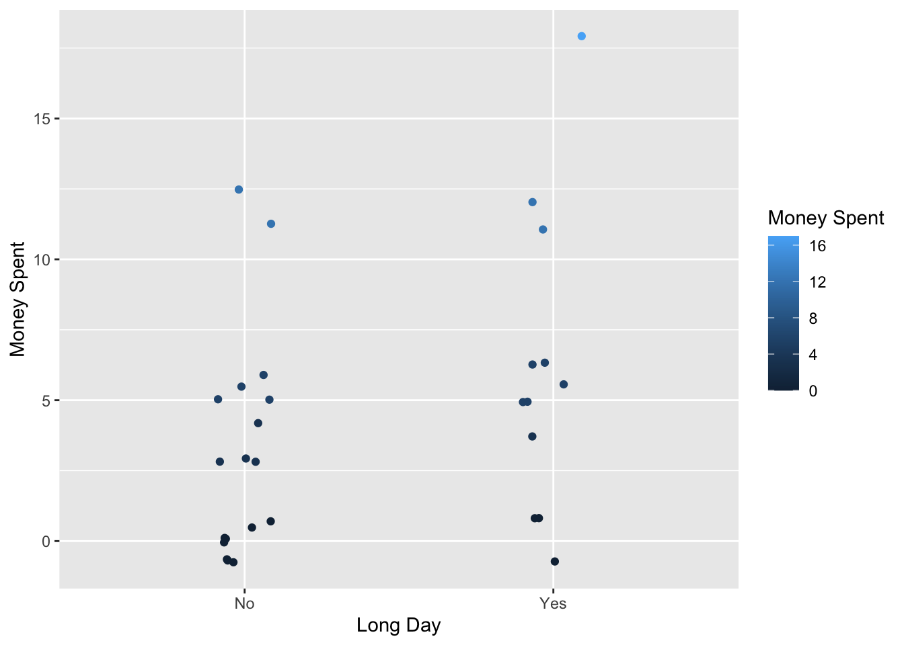

# reading in necessary packages
library(tidyverse)
library(here)
library(gt)
library(flextable)
library(janitor)
library(readxl)
library(dplyr)
# reading in data
ActiveData1 <- read_csv("DataSheet(1).csv")ENVS-193DS_homework_03
Link to github repository: https://github.com/oregel714/ENVS-193DS_homework-03.git
Problem #1:
I can summarize my data by comparing two groups (long day vs. non-long day) and the average amount of money spent depending on the day. On long days, I’m on campus for more than 5 hours and I feel that I am more tempted to spend money on campus the longer I am here. I can also compare the observations of mean dollars spent on campus between the days that I had breakfast or not. This would allow me to observe if having breakfast might influence whether or not I spend money on campus.
# wrangling and cleaning data
ggplot(data = ActiveData1,
aes(x = `Long Day`,
y = `Money Spent`,
color = `Money Spent`)) +
geom_jitter(width = 0.1)
money_spent_long_day <- ActiveData1 |>
select(`Long Day`, `Money Spent`)
average_money_summary <- money_spent_long_day |>
group_by(`Long Day`) |>
summarize(mean = mean(`Money Spent`),
sd = sd(`Money Spent`),
se = sd / sqrt(n()),
ci_lower = mean - qt(0.975, df = n() - 1) * se,
ci_upper = mean + qt(0.975, df = n() - 1) * se) |>
mutate(across(c(mean, sd, se, ci_lower, ci_upper),
~ round(.x, 1)))average_money_summary |>
gt() |>
cols_label(
`Long Day` = "Long Day",
mean = "Mean",
sd = "Standard Deviation",
se = "Standard Error",
ci_lower = "95% Confidence Level (Lower)",
ci_upper = "95% Confidence Level (Upper)"
) |>
tab_header(title = "Money Spent Summary Statistics")| Money Spent Summary Statistics | |||||
|---|---|---|---|---|---|
| Long Day | Mean | Standard Deviation | Standard Error | 95% Confidence Level (Lower) | 95% Confidence Level (Upper) |
| No | 3.3 | 3.9 | 0.9 | 1.4 | 5.3 |
| Yes | 6.0 | 5.3 | 1.5 | 2.7 | 9.4 |
Problem #2
Since I am working with how much money I spend while I’m on campus, perhaps I could visualize my data using objects or symbols related to that. I could create a histogram using my data and then use a coffee cup or a yerba mate (both of which I typically spend money on) to indicate the days in which I probably bought one. I like the way my data looks in a simple, vertical jitter plot. Maybe I can draw lines from the points as they ascend using colors to inidicate that lower amounts are better and higher amounts are worse, changing color as the jitter points ascend the graph creating tree-like shapes that
Sketch
knitr::include_graphics("/Users/swaggerboy/github/ENVS-193DS_homework-03/code/IMG_0119.png")- Draft of the data visualization
knitr::include_graphics("/Users/swaggerboy/github/ENVS-193DS_homework-03/code/IMG_0120.png")- Artist Statement I am showing what I typically spend money on while I’m on campus. Personally, this visualization does represent my need to feel like I’m productive. Yerbs and coffees are caffeinated implying productivity while I’m someone who does not find myself often needing it, however, it’s a placebo effect that helps me feel productive.
For me, the technique of simple line drawing are effective at conveying a message. It evokes a certain kind of nostalgia that takes me back to when I used to draw during recess or for fun at home. The form of my work is a drawing that I did in my notes app.
I created my work by drawing on my ipad and overlaying the drawing/sketches on top of the data visualization that I created.
Problem #3
- The statistical test performed in the study is a multivariate logistic regression. The response variable for the test is the level of contaminant detected in the drinking water and the predictor variables included the drinking fountains, their locations, and sinks. Additionally, a Wilcox signed-rank test was performed for the maximum first and second draw samples.
knitr::include_graphics("/Users/swaggerboy/github/ENVS-193DS_homework-03/code/screenshot.png")The table provided by the author displays the information well. Separate columns divide the information with no actual grid to confine the information, however, it stays neat and (on the left) conveys the necessary sample types and the mean, max, and min for each sampling of a first and second draw.
The table provided by the author provides the information conveyed in the analysis fairly well. It displays the Mean (standard deviation), maximum, and minimum of the lead levels in ppb which is explained in the caption above the table. Providing this information above the table is a critical aspect to understanding the results as the numbers are confusing without it. The only bold font present would be the column titles above the results, however, the table is a bit cluttered with a lot of numbers so additional emphasis would help clarify important information.
I think that adding some grid lines or some reference point for your eyes to trace to the information would help the overall visual clarity of the table. Having the information kind of floating around feels a little cluttered. At first glance, it looks a bit like a jumble of numbers and words. At the very least, creating lines that contain/define the columns on the top of the table would help.